Say what quantum transport is, why a lattice code is the right tool, and where the course goes.
Quantum Transport with Kwant
From the Schrödinger equation to topological matter, with the code that computes it
What quantum transport asks
Attach wires to a small quantum object and push a current through it. How much gets through, and why?
Classical wire: resistance grows with length, current is a smooth function of voltage.
Quantum wire: the conductance comes in steps of e2/h and can be higher with a barrier than without — interference decides.
The question turns into a scattering problem: an electron wave comes in through a lead, the device scatters it, and the current is the probability of getting through.
A computer is needed because devices have thousands of atoms, disorder, spin, magnetic fields — but the physics is one equation, and one lattice code solves it exactly.
The course in ten stops
The stops follow each other in order; inside each one the slides go from words to code to equations.
Stop
Physics
Kwant
1 Lattice
Schrödinger → tight binding
Builder, lattices, hoppings
2 Leads
Landauer–Büttiker, Fisher–Lee
attach_lead, smatrix
3 Shapes
resonances, billiards, parameters
shape functions, value functions
4 Spin · graphene · SC
Rashba, Dirac cones, Andreev
matrix values, honeycomb, BdG
5 Magnetic fields
Peierls phase, Landau levels, Hofstadter
phase hoppings, wraparound
6 Toolbox
KPM, continuum models, solvers, pitfalls
kpm, continuum, MUMPS vs SuperLU
7 Topology in 1D
SSH, Kitaev, Majoranas, pumps
invariants from the system
8 Topology in 2D/3D
Chern, Z2, chiral Majoranas, corners, Weyl, 3D TI
Berry curvature on a torus
9 Close
how to run it, exercises, reading
Run All
Part 2 of 10
From Schrödinger to a lattice
Show that discretising the Schrödinger equation gives a hopping model, and that Kwant's Builder is exactly that model written down.
Put the wavefunction on a grid
Replace space by a lattice of sites. The kinetic energy becomes a rule: an electron hops to its neighbours.
Each site carries an on-site energy; each bond carries a hopping amplitude t.
A finer grid means a better approximation to the continuum — and more sites to solve for.
Real crystals are lattices: for graphene or a chain of atoms the model is not an approximation at all.
Everything else in the course — leads, spin, magnetic fields, superconductivity — is a choice of what sits on the sites and the bonds.
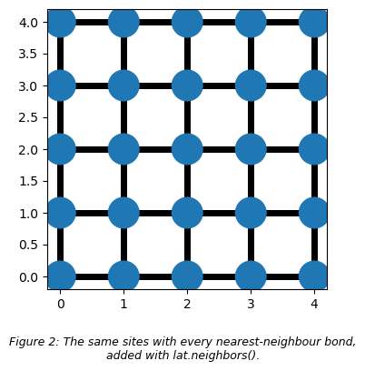
Figure 2. The same sites with every nearest-neighbour bond, added with lat.neighbors(). (§ 2. The object model · cell 6)
The discretisation, done honestly
Finite differences on a grid of spacing a turn the Laplacian into hopping.
The lattice reproduces the free particle for ka ≪ 1; at the band edge it is a different (but perfectly legitimate) crystal.
Sign convention: hoppings are −t; the on-site 4t puts the band bottom at zero. Kwant lets you choose; the notebook keeps this one.
Continuum:H = −(ħ2/2m) ∇2 + V(r)
Second derivative on a grid:ψ″(x) ≈ [ψ(x+a) − 2ψ(x) + ψ(x−a)] / a2
Hopping and on-site energy (2D):t = ħ2/(2ma2), εi = 4t + V(ri)
Band of the empty lattice:E(k) = 4t − 2t(cos kxa + cos kya) ≈ ħ2k2/2m
Kwant's Builder is the Hamiltonian, written as a dictionary
Sites and hoppings are keys; the numbers (or functions) on them are the values.
lat(x, y) is a Site: a lattice plus integer coordinates.
lat.neighbors() is a HoppingKind: 'all bonds of this shape'; lat.neighbors(2) adds the diagonals.
Values may be numbers, matrices (spin!) or functions of the site and of runtime parameters.
finalized() turns the dictionary into the matrices the solvers use. Nothing is computed before.
import kwant
lat = kwant.lattice.square(a=1, norbs=1)
syst = kwant.Builder()
for x in range(30):
for y in range(10):
syst[lat(x, y)] = 4 * t # on-site energy
syst[lat.neighbors()] = -t # every nearest-neighbour bond
fsyst = syst.finalized() # freeze -> sparse matrices
Figure 1 · The object model
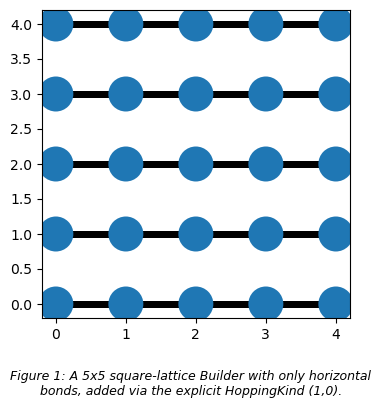
Figure 1. A 5x5 square-lattice Builder with only horizontal bonds, added via the explicit HoppingKind (1,0). (§ 2. The object model · cell 6)
Figure 3 · The object model
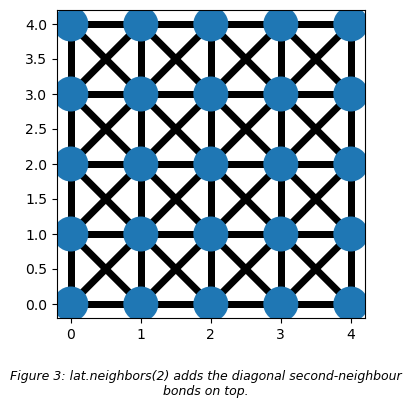
Figure 3. lat.neighbors(2) adds the diagonal second-neighbour bonds on top. (§ 2. The object model · cell 6)
The vocabulary you will use every day
Six objects; everything in the course is built from them.
Object
What it is
Typical line
Lattice
the geometry: unit vectors + basis
kwant.lattice.honeycomb()
Site
a lattice plus a tag (integer coordinates)
lat(3, 4)
Builder
the mutable Hamiltonian: sites → values, bonds → values
syst[lat(0, 0)] = 4*t
HoppingKind
a family of bonds by displacement
kwant.builder.HoppingKind((1, 0), lat)
lead
a Builder with a translational symmetry, repeated to infinity
syst.attach_lead(lead)
finalized system
immutable, indexable, solvable
kwant.smatrix(fsyst, energy)
Part 3 of 10
Leads and conductance
Compute a first conductance, see it quantised, and derive why: Landauer–Büttiker and the Fisher–Lee relation.
The canonical experiment: a wire between two reservoirs
A finite scattering region (blue) with two semi-infinite leads (red). Electrons come in from one side and leave through either.
Leads are perfect waveguides: translationally invariant, so their states are Bloch waves with a band structure En(k).
At a given energy each lead carries a finite number N of propagating modes.
The device mixes them; the scattering matrix records the outcome.
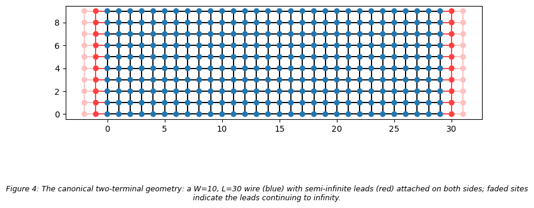
Figure 4. The canonical two-terminal geometry: a W=10, L=30 wire (blue) with semi-infinite leads (red) attached on both sides; faded sites indicate the leads continuing to infinity. (§ 3. First transport calculation — a quantum wire · cell 8)
Conductance comes in steps
Sweep the energy: every time a new subband opens in the lead, the conductance rises by exactly one unit.
Step height e2/h for spinless electrons (2e2/h with spin) — a universal constant, no material parameter in it.
A clean wire transmits every open mode perfectly: G = (e2/h) · N(E).
First seen in a quantum point contact in 1988 (van Wees; Wharam); this figure is that experiment computed.
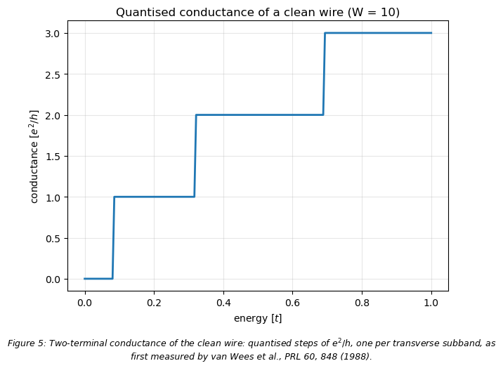
Figure 5. Two-terminal conductance of the clean wire: quantised steps of e2/h, one per transverse subband, as first measured by van Wees et al., PRL 60, 848 (1988). (§ 3. First transport calculation — a quantum wire · cell 9)
The Landauer–Büttiker formula and where Kwant gets it
Conductance is transmission. The transmission comes from the Green's function of the device.
Kwant solves a sparse linear system of the size of the device once per energy; the leads enter only through their self-energy, computed from their unit cell.
Unitarity and the sum rule are exact identities — the notebook asserts them after every calculation, and so should you.
Landauer:G = (e2/h) Σn Tn = (e2/h) Tr(t†t)
Scattering matrix:S = [[r, t′], [t, r′]], S†S = 1
Fisher–Lee:S = −1 + i Γ1/2 Gr(E) Γ1/2, Gr = (E − H − Σ)−1
The staircase is the lead's subband structure; a scattering state is one incoming mode plus everything it becomes.
Each subband minimum En opens one channel: transverse quantisation in a strip of width W gives En ≈ 2t[1 − cos(nπ/(W+1))].
The scattering state is a standing wave across the wire and a travelling wave along it — with the density pattern of the mode it came from.
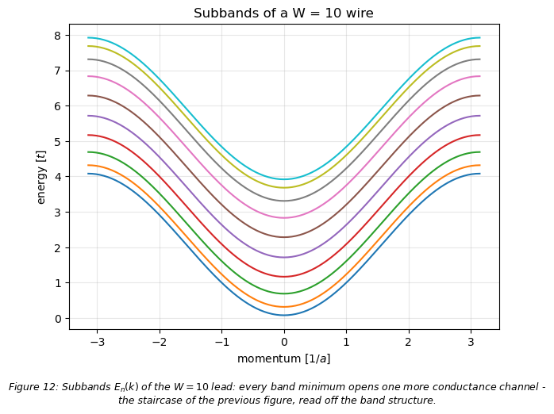
Figure 12. Subbands En(k) of the W=10 lead: every band minimum opens one more conductance channel - the staircase of the previous figure, read off the band structure. (§ 7. Band structure and closed systems · cell 20)
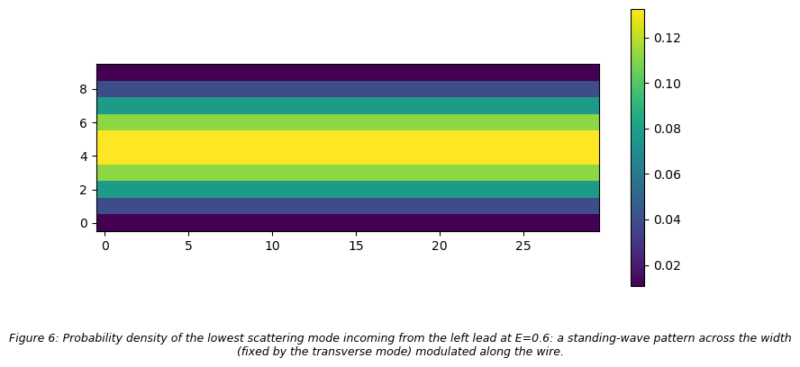
Figure 6. Probability density of the lowest scattering mode incoming from the left lead at E=0.6: a standing-wave pattern across the width (fixed by the transverse mode) modulated along the wire. (§ 4. Theory — Scattering theory: Landauer–Büttiker and Fisher–Lee · cell 13)
Ten lines from geometry to conductance
Attach leads, finalise, ask for the scattering matrix.
The lead is a Builder with a TranslationalSymmetry; attach_lead finds the interface sites.
smatrix returns the full S; transmission(1, 0) sums Tn from lead 0 into lead 1.
The last line is the sum rule as an assert: the notebook's habit of checking every result.
lead = kwant.Builder(kwant.TranslationalSymmetry((-1, 0)))
lead[(lat(0, y) for y in range(W))] = 4 * t
lead[lat.neighbors()] = -t
syst.attach_lead(lead) # left
syst.attach_lead(lead.reversed()) # right
fsyst = syst.finalized()
sm = kwant.smatrix(fsyst, energy=0.5)
G = sm.transmission(1, 0) # e^2/h units
assert abs(sm.transmission(0, 0) + G - sm.num_propagating(0)) < 1e-10
Part 4 of 10
Shapes, potentials, parameters
Make the device interesting: potentials that vary in space, arbitrary shapes, and parameters changed at solve time.
A potential well makes resonances
Lower the on-site energy in a stretch of the wire and the transmission acquires sharp peaks: quasi-bound states.
The well is a cavity; an electron bounces between its ends like light in a Fabry–Pérot etalon.
Constructive interference at the quasi-bound energies gives T → 1 peaks; in between, reflection.
In Kwant the potential is just a function of the site assigned as the on-site value.
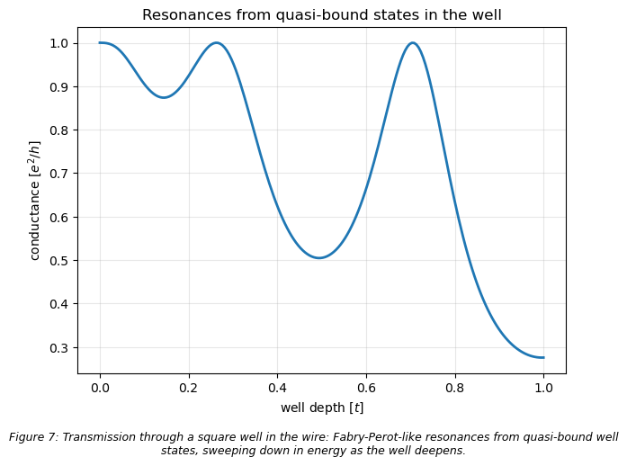
Figure 7. Transmission through a square well in the wire: Fabry-Perot-like resonances from quasi-bound well states, sweeping down in energy as the well deepens. (§ 5. Shapes, spatially varying values, and runtime parameters · cell 15)
Any shape you can write as a function
A shape is a predicate on coordinates. The stadium is the classic chaotic billiard; its eigenstates are 'scars' on classical orbits.
lat.shape(stadium, start) floods the lattice from a start site, keeping every site where the predicate is true.
Closed systems have no leads: diagonalise fsyst.hamiltonian_submatrix(sparse=True) with scipy.sparse.linalg.eigsh.
Chaotic billiards are the playground of random-matrix theory: level statistics, scarring, weak localisation.
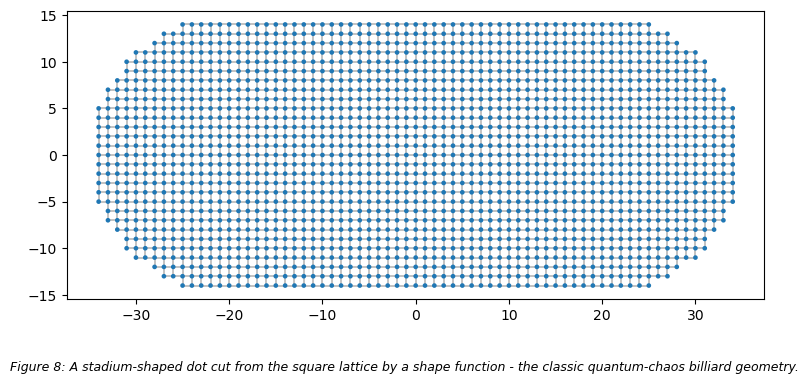
Figure 8. A stadium-shaped dot cut from the square lattice by a shape function - the classic quantum-chaos billiard geometry. (§ 5. Shapes, spatially varying values, and runtime parameters · cell 16)
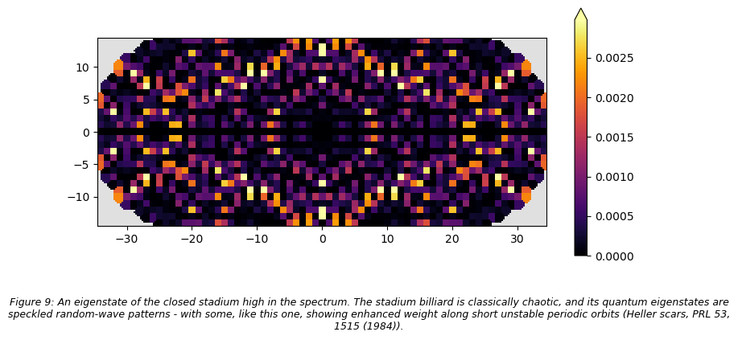
Figure 9. An eigenstate of the closed stadium high in the spectrum. The stadium billiard is classically chaotic, and its quantum eigenstates are speckled random-wave patterns - with some, like this one, showing enhanced weight along short unstable periodic orbits (Heller scars, PRL 53, 1515 (1984)). (§ 5. Shapes, spatially varying values, and runtime parameters · cell 16)
Parameters at solve time, not at build time
Values can be functions whose extra arguments are supplied when you solve — sweep a field without rebuilding.
The function's first argument is the site (or two sites for a hopping); the rest are named parameters.
params= passes them at solve time; the finalized system is built once.
This is how every sweep in the course works: energy, field, chemical potential, pairing, dimerisation.
def onsite(site, V0, x0):
x, y = site.pos
return 4 * t + (V0 if abs(x - x0) < 5 else 0)
syst[(lat(x, y) for x in range(L) for y in range(W))] = onsite
fsyst = syst.finalized()
for V0 in np.linspace(-1, 1, 41):
sm = kwant.smatrix(fsyst, energy=0.5, params=dict(V0=V0, x0=15))
Part 5 of 10
Spin, graphene, superconductors
Show the three ways to enrich a site: matrix values (spin), other lattices (graphene), particle-hole doubling (BdG).
Spin: matrix values on sites and bonds
Two orbitals per site. Rashba spin–orbit coupling is a spin-dependent hopping; a Zeeman field is a spin-dependent on-site term.
H = −t Σ (c†icj) − iα Σ c†i(σ×dij)z cj + B Σ c†iσzci
Rashba splits the subbands in k; Zeeman opens a helical gap at k = 0 where only one spin direction propagates each way.
The conductance staircase becomes non-monotonic: a plateau at an odd number of modes signals the helical gap.
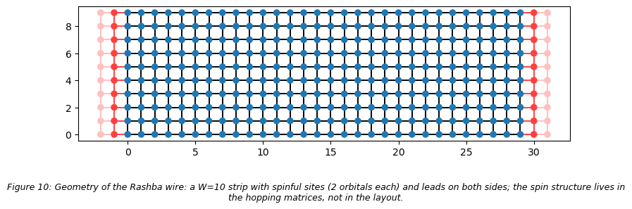
Figure 10. Geometry of the Rashba wire: a W=10 strip with spinful sites (2 orbitals each) and leads on both sides; the spin structure lives in the hopping matrices, not in the layout. (§ 6. Spin — matrix-valued on-site and hopping terms · cell 18)
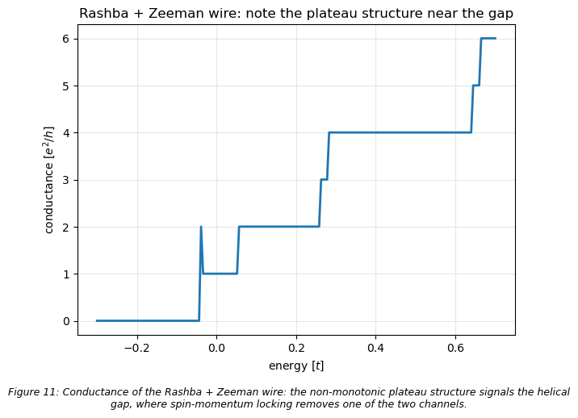
Figure 11. Conductance of the Rashba + Zeeman wire: the non-monotonic plateau structure signals the helical gap, where spin-momentum locking removes one of the two channels. (§ 6. Spin — matrix-valued on-site and hopping terms · cell 18)
Graphene: a honeycomb lattice and a p–n junction
Two sublattices, a linear 'Dirac' dispersion, and Klein tunnelling: at normal incidence a p–n junction is transparent.
kwant.lattice.honeycomb() has a two-site basis; lat.sublattices gives A and B.
A smooth potential step V(x) puts the Fermi level in the conduction band on one side and the valence band on the other.
Transmission is suppressed near the Dirac point and revives above it — the notebook's ribbon leads show the folded Dirac cones (fig. 15).
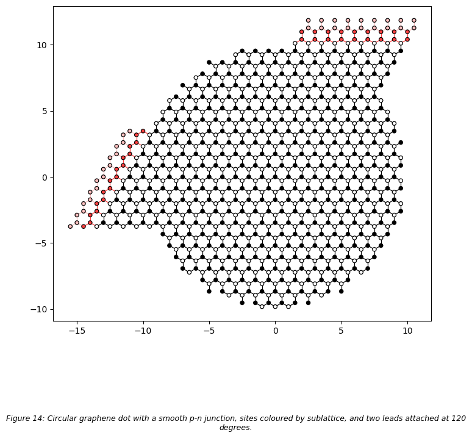
Figure 14. Circular graphene dot with a smooth p-n junction, sites coloured by sublattice, and two leads attached at 120 degrees. (§ 8. Beyond square lattices — graphene · cell 23)
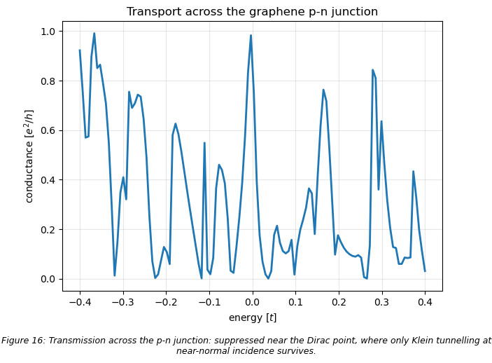
Figure 16. Transmission across the p-n junction: suppressed near the Dirac point, where only Klein tunnelling at near-normal incidence survives. (§ 8. Beyond square lattices — graphene · cell 24)
Figure 15 · Beyond square lattices — graphene
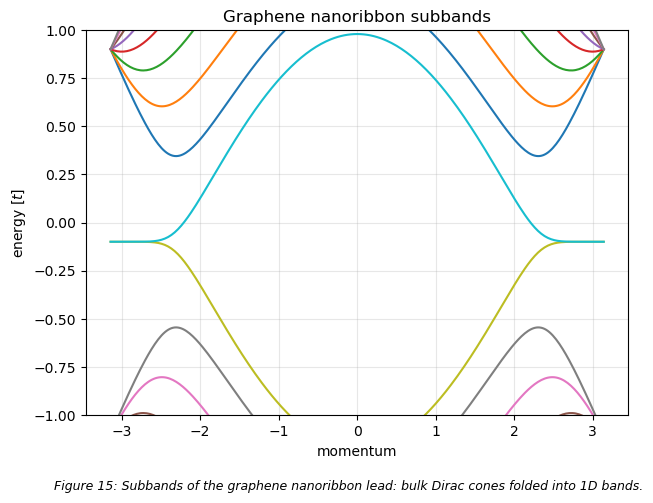
Figure 15. Subbands of the graphene nanoribbon lead: bulk Dirac cones folded into 1D bands. (§ 8. Beyond square lattices — graphene · cell 24)
Superconductors: double the space, get Andreev reflection
Bogoliubov–de Gennes doubles every site into electron and hole. An electron hitting a superconductor can bounce back as a hole.
Below the gap Δ no quasiparticle can enter the superconductor: the only channels are normal reflection and Andreev reflection (electron → hole, a Cooper pair enters).
Perfect Andreev reflection doubles the conductance: G = 2e2/h per mode with no barrier.
A tunnel barrier crosses over to the normal-state result — the Blonder–Tinkham–Klapwijk curves.
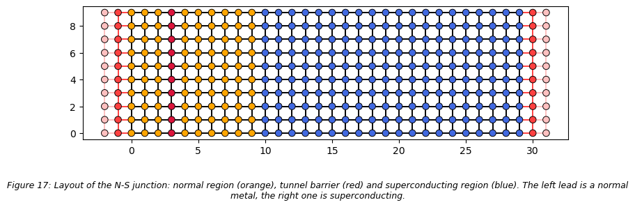
Figure 17. Layout of the N-S junction: normal region (orange), tunnel barrier (red) and superconducting region (blue). The left lead is a normal metal, the right one is superconducting. (§ 9. Superconductivity — BdG, Andreev reflection, and discrete symmetries · cell 26)
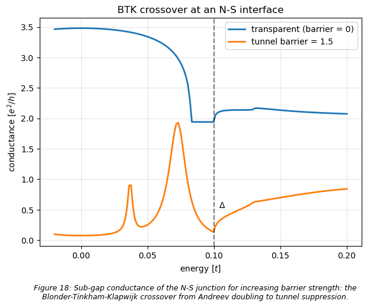
Figure 18. Sub-gap conductance of the N-S junction for increasing barrier strength: the Blonder-Tinkham-Klapwijk crossover from Andreev doubling to tunnel suppression. (§ 9. Superconductivity — BdG, Andreev reflection, and discrete symmetries · cell 26)
The BdG construction and the conductance of an N–S junction
Particle–hole symmetry is built in; the scattering matrix gets electron and hole blocks.
In Kwant: norbs=2 (or 4 with spin), on-site τz(ε − μ) + τxΔ, and conservation_law=-τz so smatrix can separate electron and hole blocks.
The notebook checks particle–hole symmetry of the spectrum and the N–S sum rule explicitly.
Particle–hole symmetry:P HBdG P−1 = −HBdG, P = τx K ⇒ spectrum symmetric about zero
Sub-gap conductance:G = (e2/h) [N − Ree + Rhe]
Perfect Andreev:Rhe = N, Ree = 0 ⇒ G = 2Ne2/h
Local observables: where the current flows
Densities and currents of a scattering state, as operators applied to the wavefunction.
kwant.operator.Density(fsyst, σ) and kwant.operator.Current(fsyst, σ) — with a matrix σ to resolve spin.
The four panels are charge density, spin density, charge current and spin current of one scattering state in the Rashba wire.
Current conservation on every site is another identity the notebook asserts.
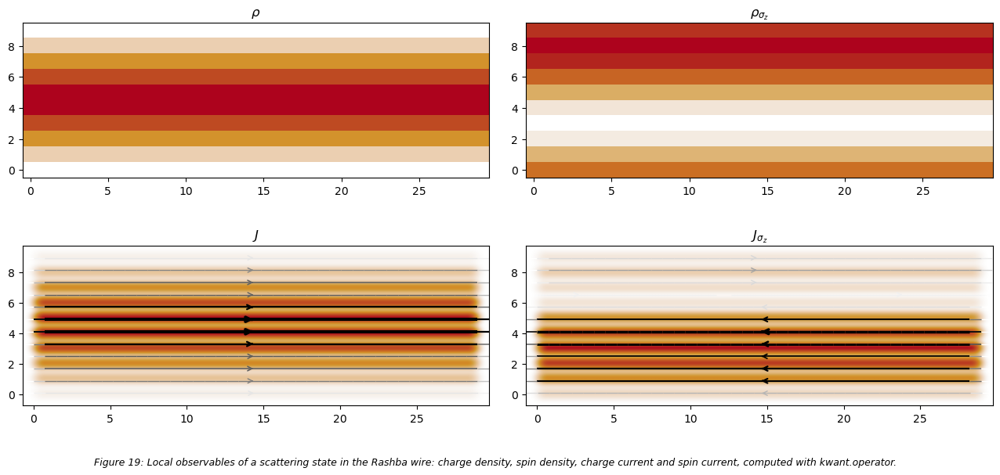
Figure 19. Local observables of a scattering state in the Rashba wire: charge density, spin density, charge current and spin current, computed with kwant.operator. (§ 10. Local observables — density and current operators · cell 29)
Part 6 of 10
Magnetic fields
Put a magnetic field on the lattice with Peierls phases; see Landau levels, the Hofstadter butterfly and a topological phase transition.
A magnetic field is a phase on every bond
Minimal coupling on a lattice: multiply each hopping by the phase of the vector potential integrated along the bond.
Landau gauge A = (−By, 0): horizontal bonds pick up exp(−2πi Φ y/Φ0).
The wire bands develop flat pieces: Landau levels in the bulk, dispersive edge states at the boundaries.
The dashed lines are the exact continuum Landau levels ħωc(n + ½) — the lattice hits them at low field.
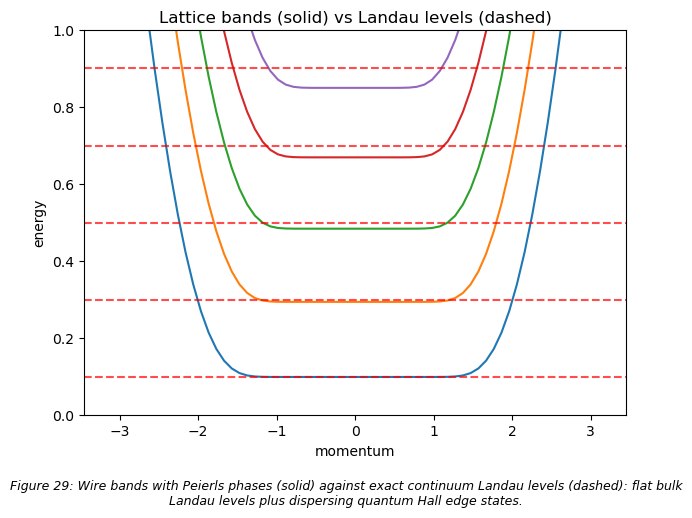
Figure 29. Wire bands with Peierls phases (solid) against exact continuum Landau levels (dashed): flat bulk Landau levels plus dispersing quantum Hall edge states. (§ 14. Magnetic fields — Peierls substitution and Landau levels · cell 43)
Figure 13 · Band structure and closed systems
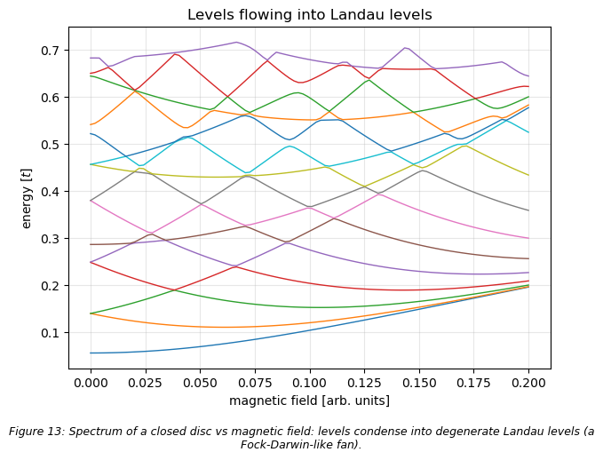
Figure 13. Spectrum of a closed disc vs magnetic field: levels condense into degenerate Landau levels (a Fock-Darwin-like fan). (§ 7. Band structure and closed systems · cell 21)
Peierls, Harper, and the flux quantum
The phase per bond, the phase per plaquette, and the 1D equation that hides the butterfly.
Every one of Kwant's magnetic-field examples is this substitution with a different A.
For a periodic system use kwant.wraparound to turn a symmetry into a momentum parameter.
Peierls phase:tij → tij exp(i(e/ħ)∫jiA·dl)
Flux per plaquette:∏plaquette phases = exp(2πi Φ/Φ0), Φ0 = h/e
Rational flux:α = p/q ⇒ the magnetic unit cell is q sites and the band splits into q subbands
The Hofstadter butterfly
Spectrum of the square lattice against flux per plaquette: at every rational flux the band splits, and the gap structure recurs at every scale.
Computed with kwant.wraparound at fixed denominator q: q magnetic subbands per flux value.
Every gap carries an integer — its Hall conductance (TKNN, 1982) — the colour in the 3D view; the Landau fan of the previous slide is the sliver near Φ = 0.
The first experiments to resolve it used moiré superlattices in graphene (2013), where the magnetic unit cell fits in a laboratory field.
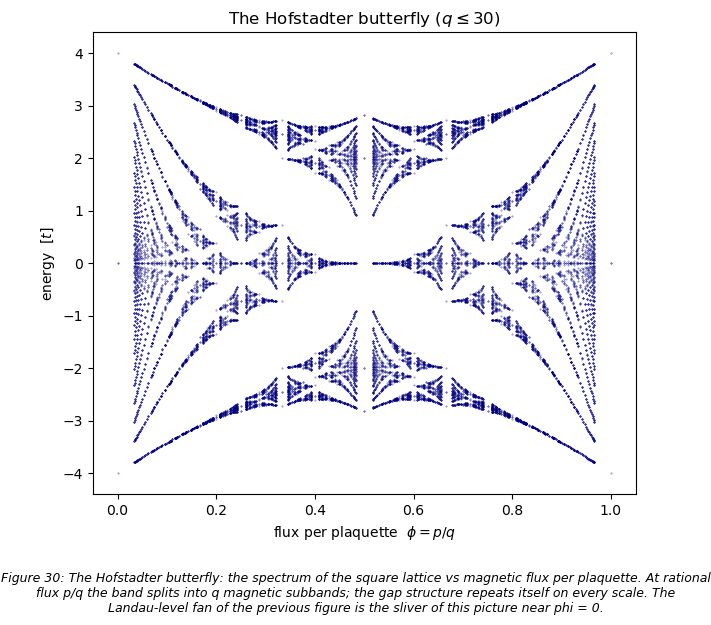
Figure 30. The Hofstadter butterfly: the spectrum of the square lattice vs magnetic flux per plaquette. At rational flux p/q the band splits into q magnetic subbands; the gap structure repeats itself on every scale. The Landau-level fan of the previous figure is the sliver of this picture near phi = 0. (§ 14. Magnetic fields — Peierls substitution and Landau levels · cell 44)
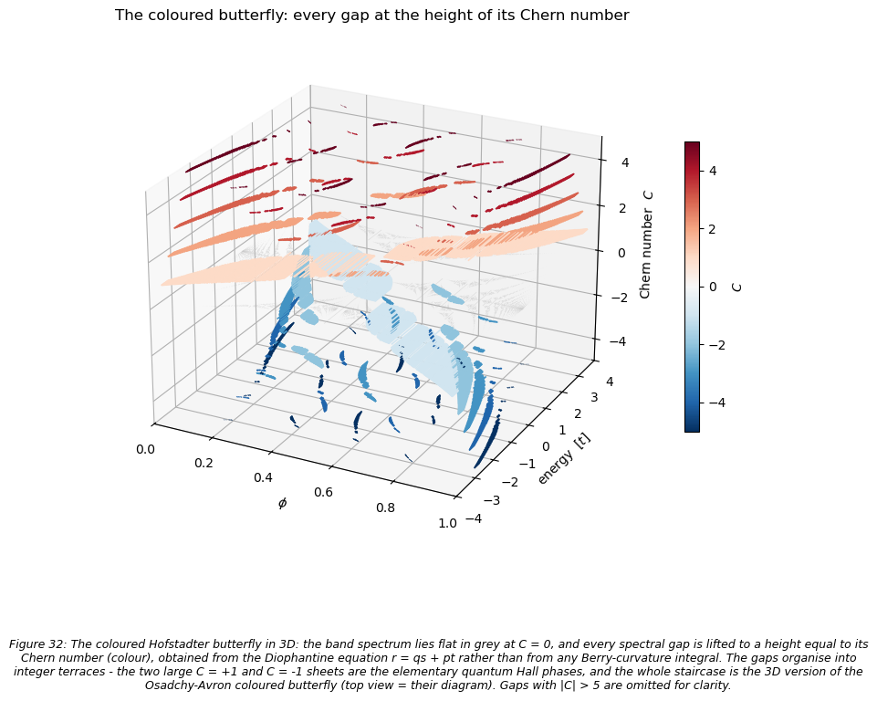
Figure 32. The coloured Hofstadter butterfly in 3D: the band spectrum lies flat in grey at C = 0, and every spectral gap is lifted to a height equal to its Chern number (colour), obtained from the Diophantine equation r = qs + pt rather than from any Berry-curvature integral. The gaps organise into integer terraces - the two large C = +1 and C = -1 sheets are the elementary quantum Hall phases, and the whole staircase is the 3D version of the Osadchy-Avron coloured butterfly (top view = their diagram). Gaps with |C| > 5 are omitted for clarity. (§ 14. Magnetic fields — Peierls substitution and Landau levels · cell 44)
Figure 31 · Magnetic fields — Peierls substitution and Landau levels
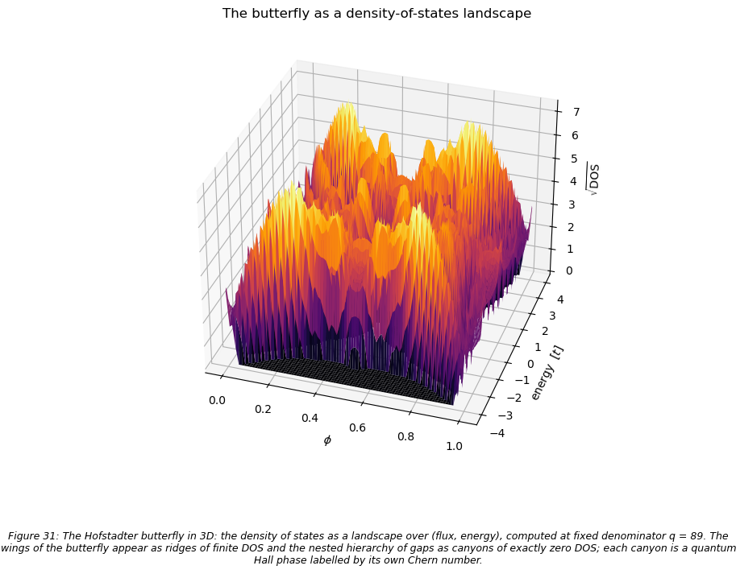
Figure 31. The Hofstadter butterfly in 3D: the density of states as a landscape over (flux, energy), computed at fixed denominator q = 89. The wings of the butterfly appear as ridges of finite DOS and the nested hierarchy of gaps as canyons of exactly zero DOS; each canyon is a quantum Hall phase labelled by its own Chern number. (§ 14. Magnetic fields — Peierls substitution and Landau levels · cell 44)
A field can switch a topological phase off
The BHZ quantum spin Hall model in a magnetic field: the Landau fan, and the level crossing where quantum spin Hall becomes quantum Hall.
The BHZ model (section 6 builds it from a continuum Hamiltonian) has helical edge states protected by time reversal.
A magnetic field breaks time reversal; the two lowest Landau levels cross at a critical field and the edge states are gone.
Same code path: Peierls phases on the BHZ hoppings, spectrum vs B.
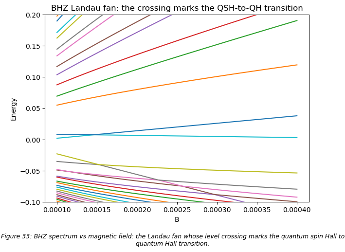
Figure 33. BHZ spectrum vs magnetic field: the Landau fan whose level crossing marks the quantum spin Hall to quantum Hall transition. (§ 14. Magnetic fields — Peierls substitution and Landau levels · cell 45)
Part 7 of 10
Toolbox
The parts of Kwant that make large or unusual problems tractable, and the pitfalls the notebook fell into so you need not.
Seeing the system: kwant.plot and kwant.plotter.map
Styling by callables: colour by sublattice, size by wavefunction weight, or interpolate onto a heat map.
kwant.plot(syst, site_color=f, site_size=g, hop_lw=h) — each argument may be a function of the site (Builder) or of the site index (finalized system).
kwant.plotter.map(fsyst, density) interpolates a per-site quantity onto a continuous image.
3D lattices render the same way (the zincblende example in the notebook, fig. 23).
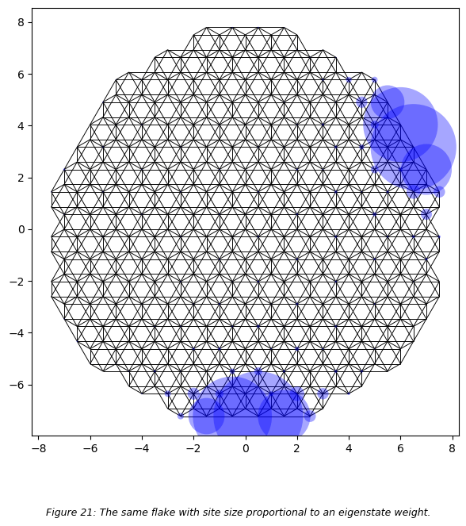
Figure 21. The same flake with site size proportional to an eigenstate weight. (§ 11. Visualisation · cell 32)
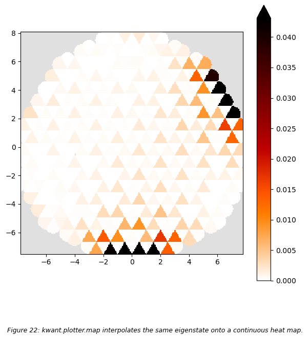
Figure 22. kwant.plotter.map interpolates the same eigenstate onto a continuous heat map. (§ 11. Visualisation · cell 32)
Figure 20 · Visualisation
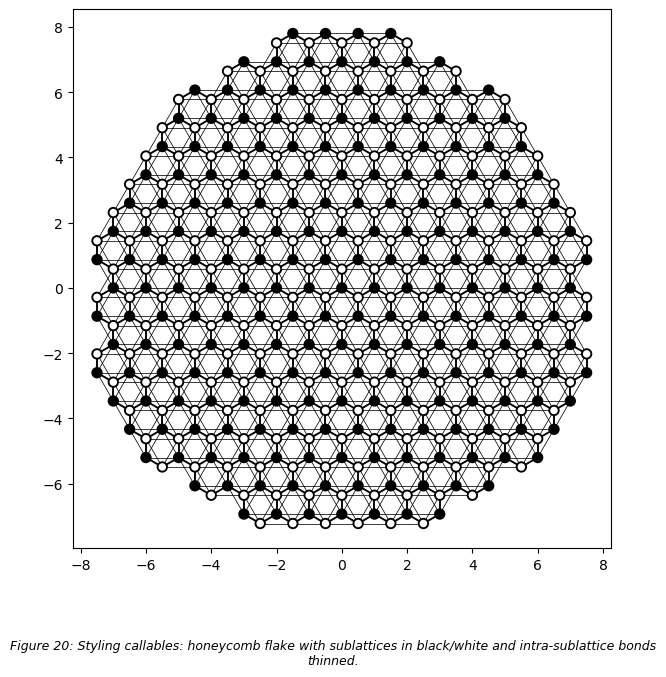
Figure 20. Styling callables: honeycomb flake with sublattices in black/white and intra-sublattice bonds thinned. (§ 11. Visualisation · cell 32)
Figure 23 · Visualisation
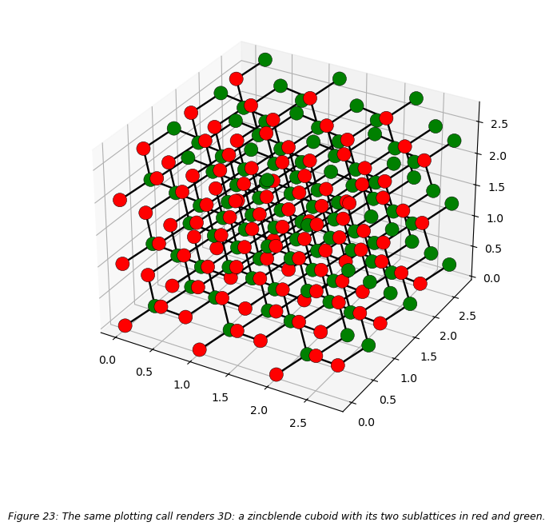
Figure 23. The same plotting call renders 3D: a zincblende cuboid with its two sublattices in red and green. (§ 11. Visualisation · cell 33)
Spectra without diagonalisation: the kernel polynomial method
Expand the density of states in Chebyshev polynomials of H; each moment costs one sparse matrix–vector product.
The trace is estimated with random vectors; the Jackson kernel gn damps the Gibbs ringing.
kwant.kpm.SpectralDensity(fsyst): graphene's van Hove peaks at |E| = t and the linear pseudogap at the Dirac point, for 104–106 sites.
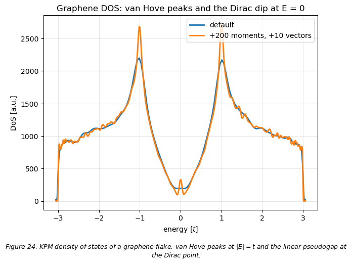
Figure 24. KPM density of states of a graphene flake: van Hove peaks at |E|=t and the linear pseudogap at the Dirac point. (§ 12. The Kernel Polynomial Method — spectral densities without diagonalisation · cell 35)
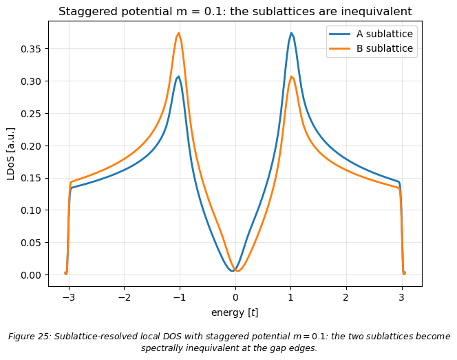
Figure 25. Sublattice-resolved local DOS with staggered potential m=0.1: the two sublattices become spectrally inequivalent at the gap edges. (§ 12. The Kernel Polynomial Method — spectral densities without diagonalisation · cell 36)
From a continuum Hamiltonian to a lattice in one call
Write the k·p model as a string; kwant.continuum discretises it symbolically.
This is the BHZ model of HgTe quantum wells; discretize applies the finite-difference rules of section 1 to every k automatically.
The ribbon spectrum shows a Kramers pair of helical edge states crossing the inverted gap (fig. 26); the edge states are spin-polarised and counter-propagating (fig. 27).
kwant.continuum.lambdify evaluates the continuum dispersion to check the lattice against it (fig. 28).
import kwant.continuum
hamiltonian = """
+ C * identity(4) + M * kron(sigma_0, sigma_z)
- B * (k_x**2 + k_y**2) * kron(sigma_0, sigma_z)
- D * (k_x**2 + k_y**2) * kron(sigma_0, sigma_0)
+ A * k_x * kron(sigma_z, sigma_x)
- A * k_y * kron(sigma_0, sigma_y)
"""
a = 20 # lattice constant in nm
template = kwant.continuum.discretize(hamiltonian, grid=a)
syst.fill(template, shape, start)
Figure 26. BHZ ribbon band structure: a Kramers pair of helical edge states crossing the inverted bulk gap - the quantum spin Hall effect. (§ 13. kwant.continuum — symbolic Hamiltonians, discretised automatically · cell 39)
Figure 27. The BHZ edge states are localised at the ribbon edges (left) and spin-polarised (right): opposite spins counter-propagate on the same edge. (§ 13. kwant.continuum — symbolic Hamiltonians, discretised automatically · cell 40)
Figure 28. Continuum BHZ dispersion evaluated with kwant.continuum.lambdify: the lattice model reproduces it faithfully near k=0. (§ 13. kwant.continuum — symbolic Hamiltonians, discretised automatically · cell 41)
What actually costs time
One sparse solve per energy; the solver choice matters more than anything else you can tune.
MUMPS (via python-mumps) is the fast default when installed: close to linear scaling with the number of sites for quasi-1D systems.
SciPy's SuperLU is the fallback: the same answers, several times slower.
Lead self-energies are computed once per energy per lead and cached — many leads are cheap, many energies are not.
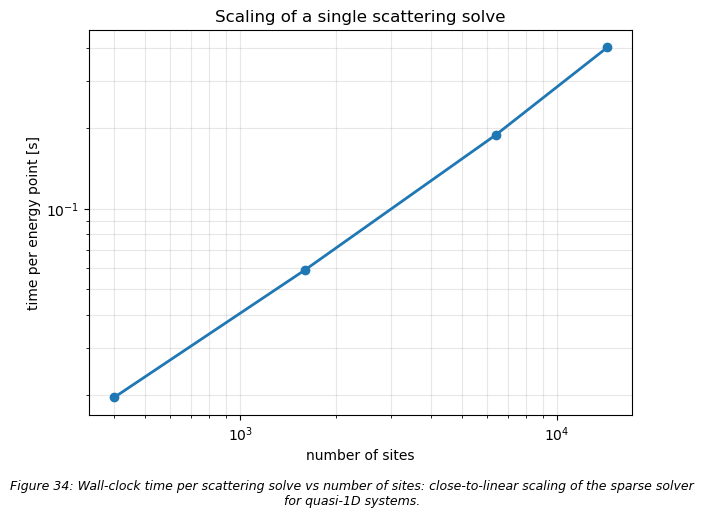
Figure 34. Wall-clock time per scattering solve vs number of sites: close-to-linear scaling of the sparse solver for quasi-1D systems. (§ 15. Solvers, performance and scaling · cell 47)
Pitfalls the notebook hit so you do not have to
Five things that went wrong while building this course, each with its check.
MUMPS is not re-entrant. Calling kwant.smatrix from several threads with MUMPS installed crashes the interpreter with no traceback. Use processes, a serial loop, or the SuperLU solver in threads. (Reported upstream with a patch; test_thread_safety.py guards it.)
numpy ≥ 2.5 breaks kwant.physics.magnetic_gauge in Kwant 1.5.0 (fixed upstream, unreleased): pin numpy<2.5 or avoid the gauge helper.
Energies inside a gap give zero propagating modes and a scattering matrix of size 0 — check num_propagating before dividing.
Degenerate BdG pairs come out with run-dependent signs; compare |E|.
Every result gets an identity check: unitarity, sum rule, particle–hole symmetry, current conservation, an invariant's quantisation — assert them.
Part 8 of 10
Topology in one dimension
Four one-dimensional models where an integer, computed from the bulk, predicts a state at the edge.
The SSH chain: the simplest topological insulator
Two sites per cell, alternating hoppings. Whether the weak bond is inside or between cells decides if the ends carry zero-energy states.
For t1 < t2 a doublet is pinned to zero energy for any chain length; for t1 > t2 there is none.
The two zero modes live at opposite ends, each on a single sublattice (fig. 37); in-gap transport with weak leads happens only in the topological phase (fig. 38).
Nothing local distinguishes the two phases — only a winding number of the bulk does.
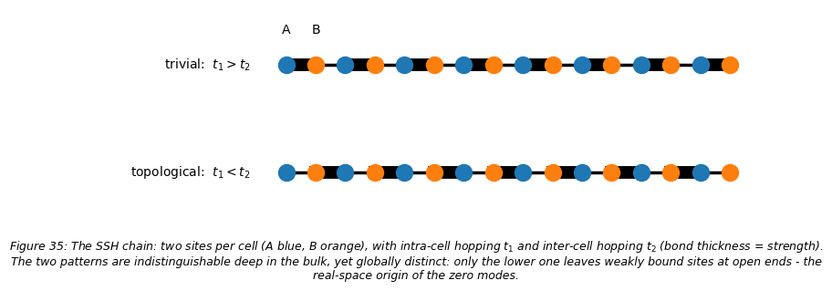
Figure 35. The SSH chain: two sites per cell (A blue, B orange), with intra-cell hopping t1 and inter-cell hopping t2 (bond thickness = strength). The two patterns are indistinguishable deep in the bulk, yet globally distinct: only the lower one leaves weakly bound sites at open ends - the real-space origin of the zero modes. (§ 17. The SSH chain — the simplest topological insulator · cell 53)
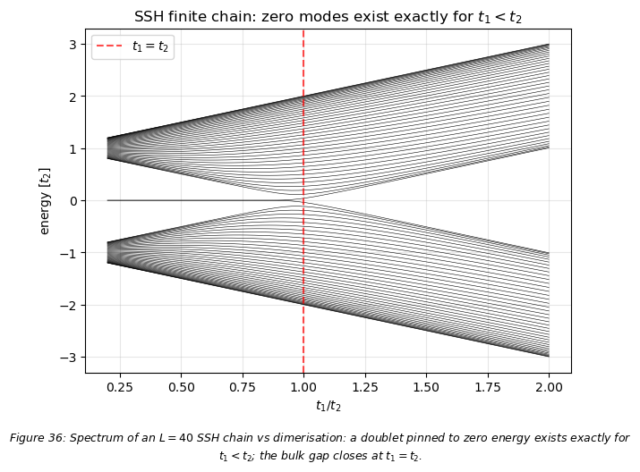
Figure 36. Spectrum of an L=40 SSH chain vs dimerisation: a doublet pinned to zero energy exists exactly for t12; the bulk gap closes at t1=t2. (§ 17. The SSH chain — the simplest topological insulator · cell 54)
Figure 37 · The SSH chain — the simplest topological insulator
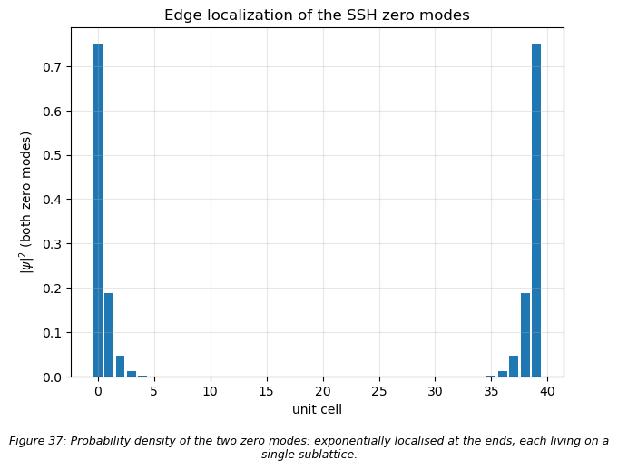
Figure 37. Probability density of the two zero modes: exponentially localised at the ends, each living on a single sublattice. (§ 17. The SSH chain — the simplest topological insulator · cell 54)
Figure 38 · The SSH chain — the simplest topological insulator
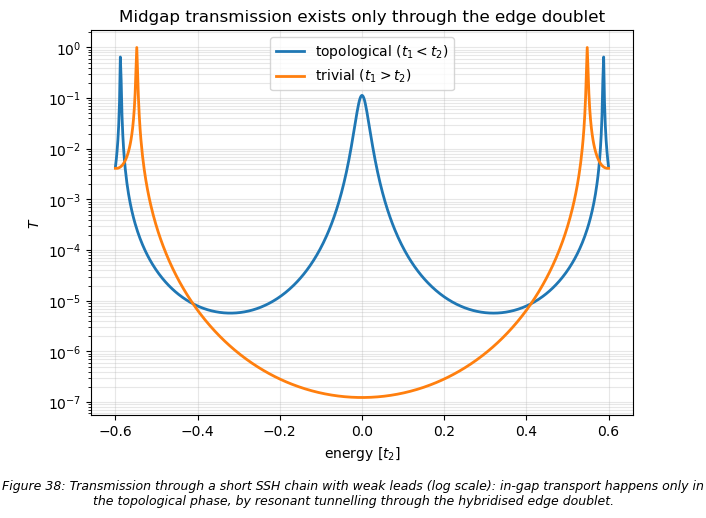
Figure 38. Transmission through a short SSH chain with weak leads (log scale): in-gap transport happens only in the topological phase, by resonant tunnelling through the hybridised edge doublet. (§ 17. The SSH chain — the simplest topological insulator · cell 55)
Winding number and Zak phase
The bulk Hamiltonian is a vector in the plane; count how many times it winds around the origin.
The notebook computes ν from d(k) and the Zak phase from the Bloch eigenvectors, and asserts they agree with the count of zero modes.
Chiral symmetry keeps dz = 0: the loop cannot leave the plane, so the winding cannot change without closing the gap.
Bulk–boundary:ν = 1 ⇒ one zero mode per end, protected by σzHσz = −H
The Kitaev chain: split an electron in two
A p-wave superconducting chain. Each fermion is two Majorana operators; in the topological phase the unpaired Majoranas sit at the two ends.
Topological for |μ| < 2t with Δ ≠ 0: a zero-energy BdG state spans the whole window (fig. 40), its density split between the ends (fig. 41).
The Majorana end mode pins the Andreev conductance at exactly 2e2/h at zero bias, for any barrier (fig. 42).
Two Majoranas far apart make one fermion whose occupation costs no energy — the qubit idea.
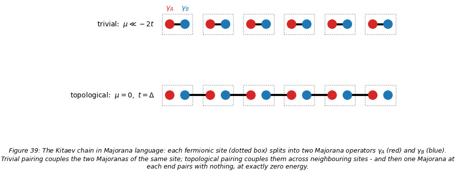
Figure 39. The Kitaev chain in Majorana language: each fermionic site (dotted box) splits into two Majorana operators γA (red) and γB (blue). Trivial pairing couples the two Majoranas of the same site; topological pairing couples them across neighbouring sites - and then one Majorana at each end pairs with nothing, at exactly zero energy. (§ 18. The Kitaev chain — Majorana zero modes · cell 57)
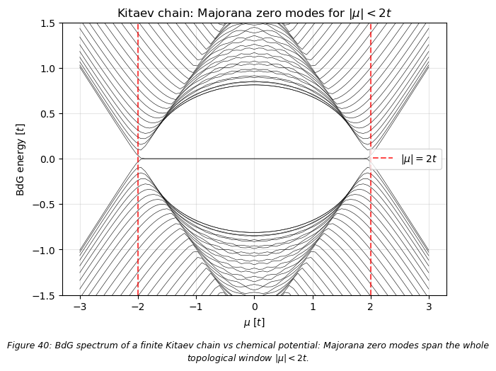
Figure 40. BdG spectrum of a finite Kitaev chain vs chemical potential: Majorana zero modes span the whole topological window |μ|<2t. (§ 18. The Kitaev chain — Majorana zero modes · cell 58)
Figure 41 · The Kitaev chain — Majorana zero modes
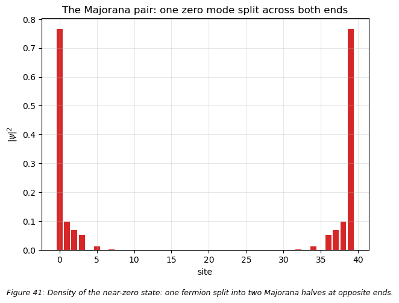
Figure 41. Density of the near-zero state: one fermion split into two Majorana halves at opposite ends. (§ 18. The Kitaev chain — Majorana zero modes · cell 58)
Figure 42 · The Kitaev chain — Majorana zero modes
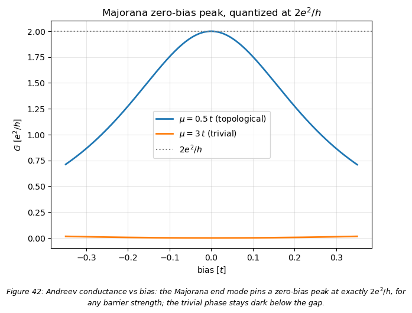
Figure 42. Andreev conductance vs bias: the Majorana end mode pins a zero-bias peak at exactly 2e2/h, for any barrier strength; the trivial phase stays dark below the gap. (§ 18. The Kitaev chain — Majorana zero modes · cell 59)
Majorana operators and the Z2 invariant
The invariant of a particle–hole symmetric chain is a sign: the Pfaffian of the Hamiltonian at the two time-reversal-invariant momenta.
The notebook computes the Pfaffians and asserts the phase boundary at μ = ±2t.
A Z2 invariant can only be 0 or 1: two Majorana pairs at one end can gap each other out.
Z2 invariant:(−1)ν = sgn Pf[A(0)] · sgn Pf[A(π)], A(k) = i HBdG(k) in the Majorana basis
Result:ν = 1 ⇔ |μ| < 2t
The Majorana nanowire: Kitaev physics in a real device
A semiconductor wire with spin–orbit coupling on a superconductor, in a magnetic field. Three ingredients, one Kitaev chain.
The bulk gap closes exactly at Bc = √(Δ2 + μ2) and reopens topological (fig. 44).
A tunnelling map G(V, B) shows the zero-bias peak emerging beyond Bc (fig. 45); the Majorana pair is visible in real space (fig. 46).
Rashba + Zeeman make the helical gap of section 4; proximity pairing inside it is effectively p-wave.
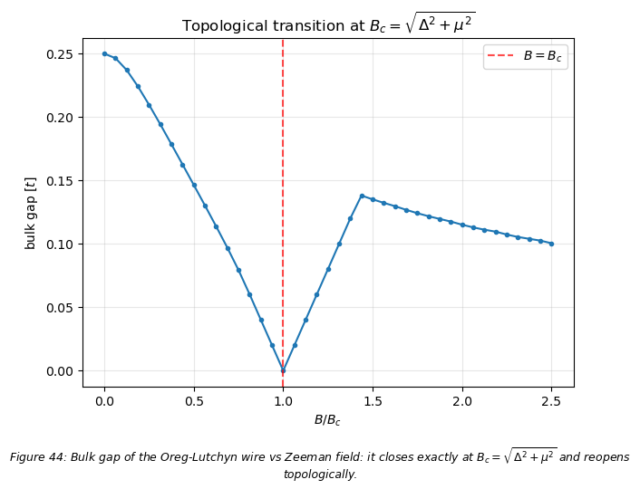
Figure 44. Bulk gap of the Oreg-Lutchyn wire vs Zeeman field: it closes exactly at Bc=√(Δ2+μ2) and reopens topologically. (§ 19. The Majorana nanowire — Kitaev physics in a real device · cell 62)
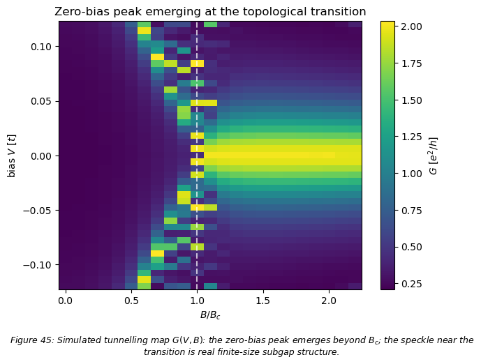
Figure 45. Simulated tunnelling map G(V,B): the zero-bias peak emerges beyond Bc; the speckle near the transition is real finite-size subgap structure. (§ 19. The Majorana nanowire — Kitaev physics in a real device · cell 62)
Figure 43 · The Majorana nanowire — Kitaev physics in a real device
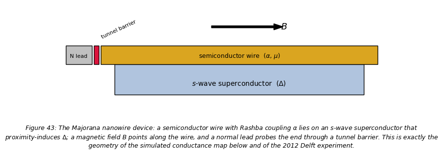
Figure 43. The Majorana nanowire device: a semiconductor wire with Rashba coupling α lies on an s-wave superconductor that proximity-induces Δ; a magnetic field B points along the wire, and a normal lead probes the end through a tunnel barrier. This is exactly the geometry of the simulated conductance map below and of the 2012 Delft experiment. (§ 19. The Majorana nanowire — Kitaev physics in a real device · cell 61)
Figure 46 · The Majorana nanowire — Kitaev physics in a real device
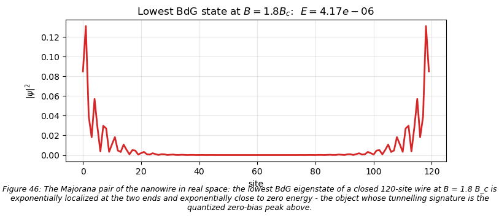
Figure 46. The Majorana pair of the nanowire in real space: the lowest BdG eigenstate of a closed 120-site wire at B = 1.8 B_c is exponentially localized at the two ends and exponentially close to zero energy - the object whose tunnelling signature is the quantized zero-bias peak above. (§ 19. The Majorana nanowire — Kitaev physics in a real device · cell 62)
The Thouless pump: a Chern number in (k, t)
Cycle the SSH parameters slowly around the gapless point and exactly one electron per cell is transported per cycle.
The Rice–Mele model adds a staggered potential to SSH; the cycle encircles the only gapless point (δ, Δ) = (0, 0).
Edge states ladder across the bulk gap while the bulk polarisation winds by one unit cell (fig. 48).
The pumped charge is the Chern number of the band over the (k, t) torus — the same integer as in 2D.
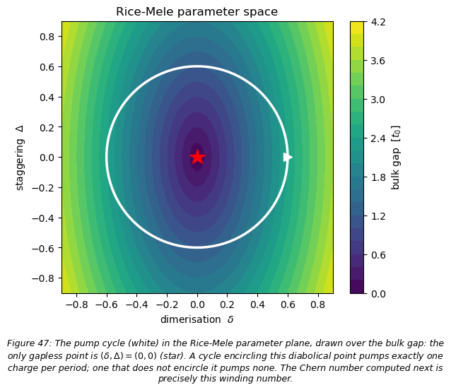
Figure 47. The pump cycle (white) in the Rice-Mele parameter plane, drawn over the bulk gap: the only gapless point is (δ,Δ)=(0,0) (star). A cycle encircling this diabolical point pumps exactly one charge per period; one that does not encircle it pumps none. The Chern number computed next is precisely this winding number. (§ 20. The Thouless pump — a Chern number in (k, t) · cell 64)
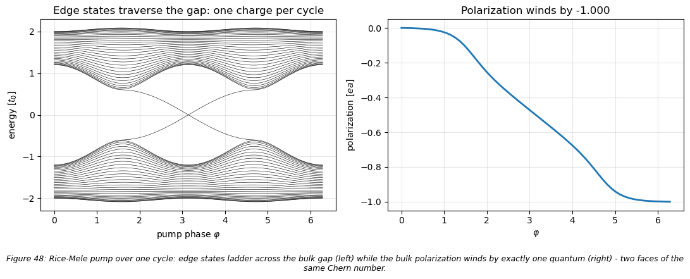
Figure 48. Rice-Mele pump over one cycle: edge states ladder across the bulk gap (left) while the bulk polarization winds by exactly one quantum (right) - two faces of the same Chern number. (§ 20. The Thouless pump — a Chern number in (k, t) · cell 65)
Part 9 of 10
Topology in two and three dimensions
Six models, one method: compute a Berry-curvature invariant from the bulk Bloch Hamiltonian, then find the promised boundary state in a finite system.
The Haldane model: a Chern insulator without Landau levels
Honeycomb lattice, real nearest-neighbour hopping, complex second-neighbour hopping. A quantum Hall effect with zero net field.
Phase diagram from the Chern number: lobes with C = ±1 bounded by |M| = 3√3 t2 sin φ (fig. 50).
One chiral edge mode per edge crosses the bulk gap of a zigzag ribbon (fig. 52); the two-terminal conductance is e2/h.
Realised in cold atoms (2014) and, as the quantum anomalous Hall effect, in magnetic topological insulators (2013).
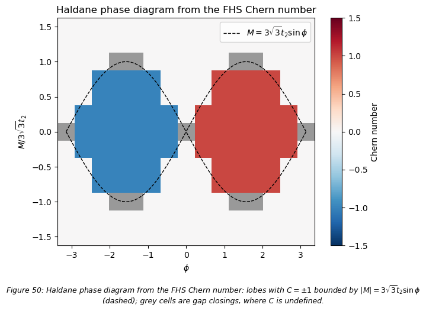
Figure 50. Haldane phase diagram from the FHS Chern number: lobes with C=±1 bounded by |M|=3√(3)t2sinφ (dashed); grey cells are gap closings, where C is undefined. (§ 21. The Haldane model — a Chern insulator without Landau levels · cell 68)
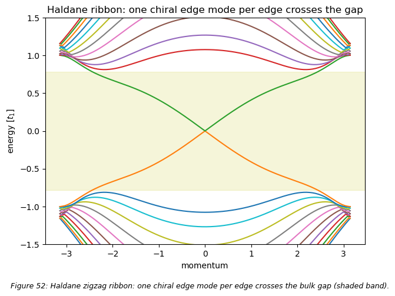
Figure 52. Haldane zigzag ribbon: one chiral edge mode per edge crosses the bulk gap (shaded band). (§ 21. The Haldane model — a Chern insulator without Landau levels · cell 70)
Figure 49 · The Haldane model — a Chern insulator without Landau levels
Figure 49. The Haldane model on the honeycomb lattice (A blue, B red): real NN hopping plus complex second-neighbour hoppings t2 e± iφ, with the phase acquired along the arrowed (chiral) direction. This mimics a staggered magnetic flux with zero net flux per plaquette - time reversal is broken without any Landau levels. The Kane-Mele model of the next section uses the same lattice, with opposite chirality for opposite spins. (§ 21. The Haldane model — a Chern insulator without Landau levels · cell 67)
Berry curvature and the Chern number on a lattice
The invariant is the integral of the Berry curvature over the Brillouin-zone torus; on a grid it is a sum of plaquette phases.
The lattice formula is gauge invariant plaquette by plaquette and exactly integer for any grid fine enough to resolve the gap — the notebook's chern_fhs (section 20) serves every 2D model.
The Berry curvature of the lower Haldane band over the torus (fig. 51) integrates to C = 1.
Fukui–Hatsugai–Suzuki:Ui(k) = ⟨uk|uk+δi⟩/|…|, F = arg[Ux(k) Uy(k+δx) Ux(k+δy)−1 Uy(k)−1], C = (1/2π)Σ F
TKNN:σxy = (e2/h) Σoccupied Cn
Figure 51 · The Haldane model — a Chern insulator without Landau levels
Figure 51. Berry curvature of the lower Haldane band over the Brillouin-zone torus (reduced coordinates; the two bumps sit at the Dirac points K and Kprime). In the topological phase (left) both valleys carry curvature of the same sign and the surface integrates to exactly 2pi - Chern number 1. In the trivial phase (right) the staggered mass has re-inverted one valley: a tall negative spike at Kprime (whose gap is small, hence the large curvature) exactly cancels the broad positive lobe at K, and the integral vanishes. The Chern number is nothing but the signed volume under this surface. (§ 21. The Haldane model — a Chern insulator without Landau levels · cell 69)
Kane–Mele: two copies of Haldane, one Z2
Spin-up and spin-down electrons see opposite Haldane phases. Time reversal is restored; the edge carries a helical pair.
The helical crossing survives Rashba coupling because Kramers' theorem forbids the two partners from mixing (fig. 53, right).
All current injected inside the gap flows along the edges (fig. 54); the two-terminal conductance is 2e2/h.
The invariant is Z2: the spin Chern number mod 2, or the Fu–Kane Pfaffian.
Figure 53. Kane-Mele ribbon without (left) and with (right) Rashba coupling: the helical crossing survives because it is protected by time reversal, not by spin conservation. (§ 22. The Kane–Mele model — Z₂ and the quantum spin Hall effect · cell 72)Figure 54. Total scattering density injected from the left lead at E = 0.1, inside the Kane-Mele gap: all the current flows in two bright stripes along the top and bottom edges while the bulk stays dark - the quantum spin Hall edge channels seen in real space. (§ 22. The Kane–Mele model — Z₂ and the quantum spin Hall effect · cell 72)
The p+ip superconductor: a chiral Majorana edge
Spinless pairing with a phase that winds around the Fermi surface. The topological phase has a single Majorana mode running around the boundary.
BdG Chern number C = ±1 in the weak-pairing phases, transitions at μ = 0, ±4t (fig. 56).
A strip has one chiral Majorana branch crossing the gap in the topological phase (fig. 57); a finite sample's lowest state circulates the whole boundary (fig. 58).
A vortex in the pairing binds a Majorana zero mode — the 2D route to non-Abelian statistics.
Figure 56. BdG Chern number of the p+ip superconductor vs μ: C=±1 in the weak-pairing phases, transitions at μ=-4t,0,+4t. (§ 23. The p+ip superconductor — chiral Majorana edges · cell 75)Figure 58. Density of the lowest BdG state of a finite p+ip sample: the chiral Majorana mode circulates the whole boundary. (§ 23. The p+ip superconductor — chiral Majorana edges · cell 75)
Figure 55 · The p+ip superconductor — chiral Majorana edges
Figure 55. The p+ip pairing on the square lattice: the pair potential is real on horizontal bonds and imaginary on vertical ones, so its phase winds by 2π around the Fermi surface - the lattice version of Δ(k)∝ kx + i ky. This winding is what makes the BdG bands carry a Chern number. (§ 23. The p+ip superconductor — chiral Majorana edges · cell 74)
Figure 57 · The p+ip superconductor — chiral Majorana edges
Figure 57. Strip spectra: a single chiral Majorana branch crosses the gap in the topological phase (left); the trivial phase is fully gapped (right). (§ 23. The p+ip superconductor — chiral Majorana edges · cell 75)
Higher-order topology: the BBH quadrupole
Four sites per cell on a square lattice with π flux. The bulk and the edges are gapped; the corners carry the zero modes.
Wannier bands ν±(kx) are gapped in the topological phase and collapse in the trivial one (fig. 60).
A finite flake has four zero-energy states whose density sits on the four corners (fig. 61); each carries charge e/2.
The invariant is a nested Wilson loop — a Berry phase of a Berry phase — the quadrupole moment quantised to ½.
Figure 60. Wannier bands ν±(kx) of the BBH model: gapped in the topological phase (colour), collapsed in the trivial one (dashed) - the input of the nested Wilson loop. (§ 24. The BBH quadrupole — higher-order topology · cell 78)Figure 61. A finite BBH flake: four zero-energy states inside the gap (left, red) whose density sits on the four corners (right). (§ 24. The BBH quadrupole — higher-order topology · cell 78)
Figure 59 · The BBH quadrupole — higher-order topology
Figure 59. The BBH lattice: four sites per unit cell with weak intra-cell bonds γ (thin) and strong inter-cell bonds λ (thick). One bond of every square carries a minus sign (red dashed), threading a π flux through each plaquette; this flux gaps the would-be edge bands, so for γ<λ the protected zero modes are pushed all the way to the corners. (§ 24. The BBH quadrupole — higher-order topology · cell 77)
Weyl semimetals: Fermi arcs from sliced Chern numbers
A 3D band touching that is a monopole of Berry curvature. Slice the Brillouin zone: the Chern number jumps at each node, and the surface shows an arc.
Chern number of the 2D slices H(kx, ky; kz) jumps by the chirality ±1 at each Weyl node (fig. 62).
Between the nodes every slice is a Chern insulator with an edge state — stacked, they form the Fermi arc on the surface (fig. 63).
Transport through a Weyl bar (fig. 65) shows the arc contribution; the 3D dispersion (fig. 64) shows the two sheets touching at the nodes.
Figure 62. Chern number of the 2D slices H(kx,ky;kz): it jumps by the chirality ±1 at each Weyl node - the nodes are monopoles of Berry curvature. (§ 25. Weyl semimetals — Fermi arcs from sliced Chern numbers · cell 80)Figure 63. Zero-energy surface map of a Weyl slab: the Fermi arc connects the surface projections of the two Weyl nodes (stars). (§ 25. Weyl semimetals — Fermi arcs from sliced Chern numbers · cell 80)
Figure 64. The Weyl slab dispersion in 3D: the two bands nearest E=0 over the surface Brillouin zone. The sheets touch at the projections of the two Weyl nodes (stars) - the remnants of the bulk cones - and, unlike the point-touching Dirac cone of the 3D TI, they stay glued together along a whole line segment between them (cyan): the Fermi arc. The arc is the stack of chiral edge modes of all the C=1 slices found above. (§ 25. Weyl semimetals — Fermi arcs from sliced Chern numbers · cell 80)
Figure 65. Geometry of the Weyl transport bar: an 8x8x6 cubic-lattice block (blue) with semi-infinite leads (red) along z, the direction joining the two Weyl nodes. (§ 25. Weyl semimetals — Fermi arcs from sliced Chern numbers · cell 80)
The 3D topological insulator: a Dirac cone on every surface
A band-inverted 3D insulator with time reversal. Its Z2 index is a product of parities; its surface is a single, unremovable Dirac cone.
Slab spectrum coloured by surface weight: one surface Dirac cone spans the inverted gap (fig. 66); as a 3D dispersion it is a single cone (fig. 67).
Fu–Kane: (−1)ν0 = ∏TRIM ξoccupied — the product of parity eigenvalues at the eight time-reversal-invariant momenta.
Transport through a TI bar (fig. 68): in the topological phase the surface conducts while the bulk is insulating.
Figure 66. Slab spectrum of the 3D TI model coloured by surface weight: a single surface Dirac cone spans the inverted gap (left); the trivial phase shows only gapped bulk bands (right). (§ 26. The 3D topological insulator — a Dirac cone on every surface · cell 82)Figure 68. Geometry of the 3D TI transport bar: 6x6 cross-section, 8 cells long, leads along z. In the topological phase every facet of this bar carries a piece of the protected surface state, so the bar conducts even though its bulk is insulating. (§ 26. The 3D topological insulator — a Dirac cone on every surface · cell 82)
Figure 67 · The 3D topological insulator — a Dirac cone on every surface
Figure 67. The protected surface state of the strong TI as a 3D dispersion: the two slab bands nearest E=0 form a single Dirac cone centred at the surface Gamma point, with velocity set by the SOC strength. Away from the node the sheets bend over as they merge into the bulk bands. A single cone like this cannot exist in any standalone 2D lattice (fermion doubling) - it lives only on the boundary of a 3D topological bulk. (§ 26. The 3D topological insulator — a Dirac cone on every surface · cell 82)
Part 10 of 10
Close
Send them to the notebook: how to run it, what the exercises ask, where to read next.
Run it yourself
One command on Windows; three lines of conda elsewhere. Then Run All.
Open Kwant_Theory_and_Practice.ipynb with the kernel Python (kwant) and Run All: about four minutes with MUMPS.
Every figure of this deck is a numbered figure of that notebook (course/figures/figures.json maps them).
python -m pytest tests checks the notebook's counts, the licence texts and the documentation.
Twenty-five, at the end of each part, each with an origin flag and a difficulty mark; every one is solved and asserted in the companion notebook.
◦ direct — one call or one parameter change: thread a wire (E1.1), sweep the potential well (E1.4), reverse the Rice–Mele pump cycle (E2.5), recompute the Haldane phase diagram (E2.6).
• requires thought — a new observable or geometry: the Landauer formula at finite bias (E1.3), universal conductance fluctuations (E1.5), the graphene p–n sweep (E1.6), a Kane–Mele Rashba sweep (E2.8), tracking the Weyl nodes (E2.11).
★ mini-project — Andreev bound states and the Josephson effect (E1.8), a next-nearest-neighbour SSH chain (E2.3), a vortex in the p+ip superconductor (E2.9), the Fu–Kane parity invariant (E2.12).
Two are pencil-and-paper: the FHS plaquette flux (E1.11) and what particle–hole symmetry alone implies (E2.14).
Origins are marked: some are re-posed Kwant tutorial problems, some paraphrase topocondmat.org or Asbóth et al., most are original. The solutions notebook is the marking key: its asserts are the rubric.
Where to read next
The three sources this course was modelled on, and the papers behind each model.
Kwant: Groth, Wimmer, Akhmerov, Waintal, New J. Phys. 16, 063065 (2014); the tutorial at kwant-project.org.
Transport: Datta, Electronic Transport in Mesoscopic Systems; Nazarov & Blanter, Quantum Transport.
Topology: Asbóth, Oroszlány, Pályi, A Short Course on Topological Insulators (arXiv:1509.02295); topocondmat.org (TU Delft); Bernevig & Hughes, Topological Insulators and Topological Superconductors.
The models: SSH 1979 · Haldane 1988 · Kane–Mele 2005 · Fu–Kane 2007 · Kitaev 2001 · Lutchyn/Oreg 2010 · BBH 2017 · Weyl in TaAs 2015 — every one cited in the notebook's reference shelf (section 27).
Upstream: the Kwant findings of this project (MUMPS re-entrancy, numpy 2.5, plotter warning filters) are documented in docs/02-findings-backlog.md with patches.
Thank you
Slides, handout, lecturer notes and the notebook that made every figure: kwant-theory-and-practice · Apache-2.0